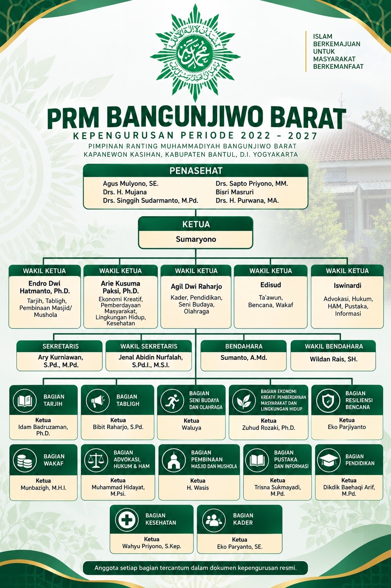
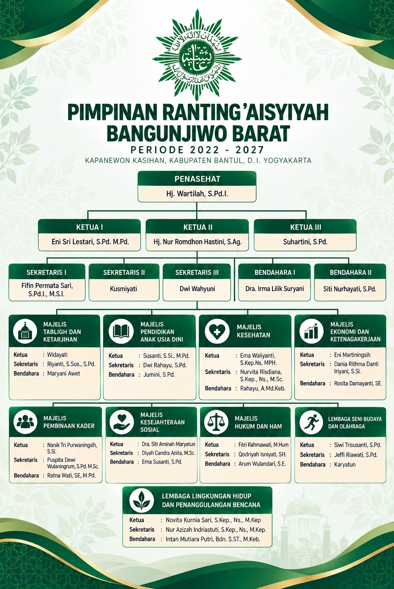
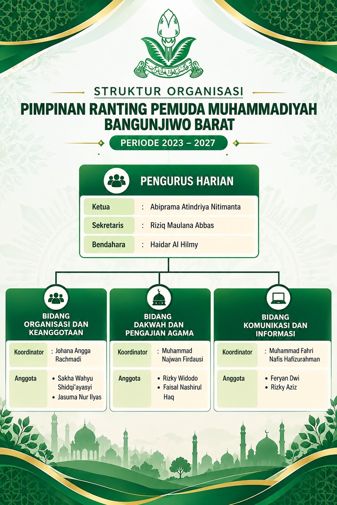
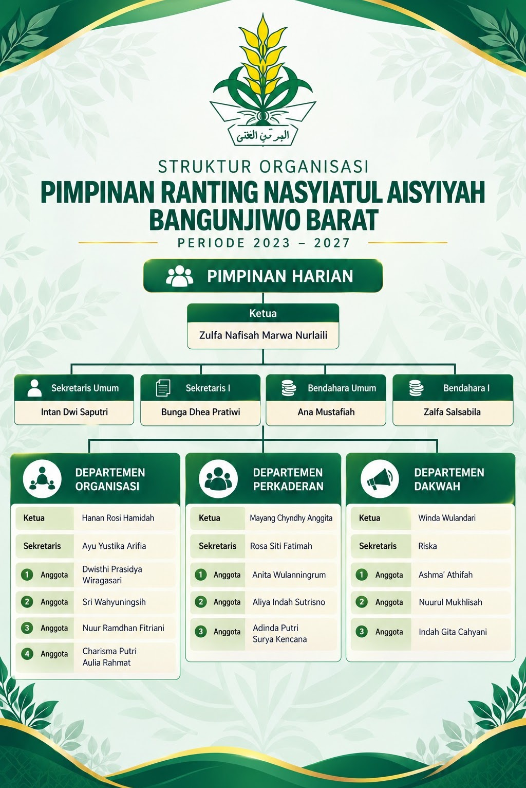

Amanah Kepemimpinan
Struktur Pimpinan PRM & PRA Periode 2022-2027
Bagan struktur organisasi interaktif Badan Pembina & Pimpinan Harian (BPH), Koordinator Bidang, serta 12 Bagian Pelaksana PRM dan 9 Majelis PRA Bangunjiwo Barat.
Dokumentasi Visual Asli
Klik foto untuk memperbesar
Galeri Foto & Dokumentasi (4 Foto)

Perbesar
Perbesar
Perbesar
Perbesar
Arsip Dokumen Resmi Persyarikatan